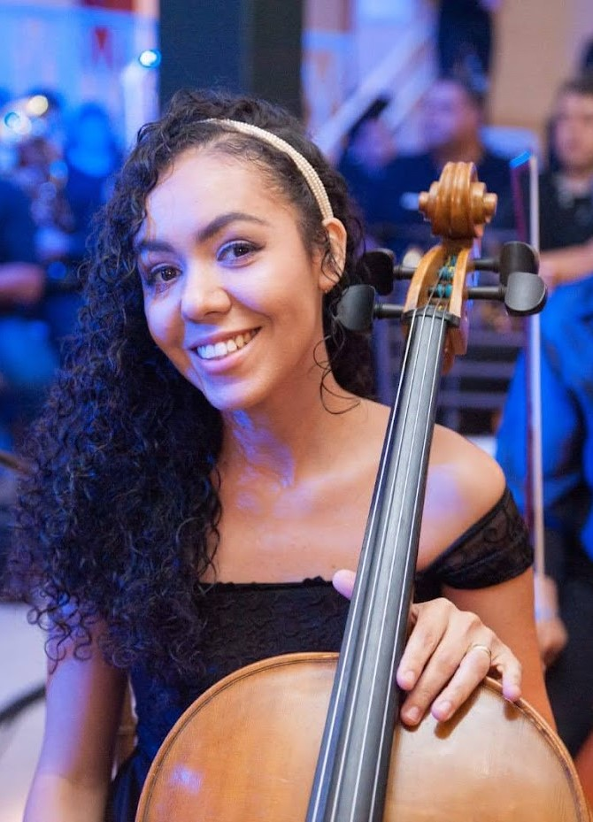
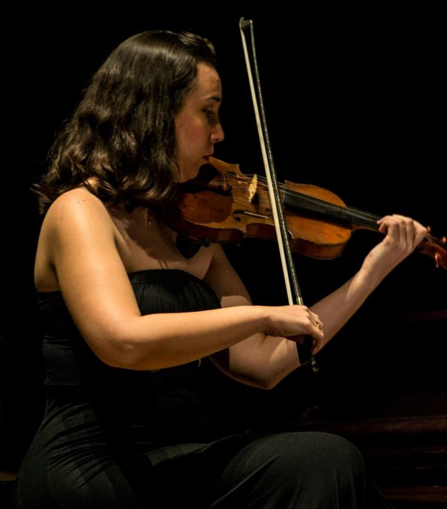

Professores
Samara de Souza Cordeiro Shinohara
"A música é a linguagem do coração sem palavras."
Shinichi Suzuki
Violoncelista. Natural de Primavera – SP, iniciou seus estudos aos 12 anos em Presidente Prudente – SP no ensino coletivo de Violoncelo do Projeto Guri, com o professor Júlio Possette. Em 2008, teve uma breve passagem pela então Orquestra Municipal de Presidente Prudente. Entre 2012 e 2014 atuou como Aprendiz na orquestra do Grupo de Referência do Projeto Guri, sob regência de André Sanches, Ariel Britos, Arthur Barbosa, Francis Auresco e Jean Reis. Participou do III Festival de Música Erudita de Piracicaba, em masterclasses com Dmitry Kouzov, Elga Winold, e Lilit Kurdiyan.
Em 2016, fez o curso de Filosofia Suzuki com a professora Shinobo Saito e também esteve presente no Workshop Internacional de Aprendizado Coletivo de Cordas em Curitiba, com grandes nomes do cenário nacional e internacional. Em 2018, participou do Workshop Thumb Position com o professor Rick Mooney. Recentemente participou de eventos como: Festival Internacional de Música em Casa da Universidade Federal do Rio Grande do Norte; o 22º Encontro de Violoncelos de Porto Alegre; 7° Festival de Violoncelos de Ouro Branco.
Atualmente, trabalha com o ensino de música para crianças e adolescentes no Projeto Guri. Graduanda em Pedagogia, continua seus estudos sob tutela do professor Júlio Possette, na Escola Municipal de Artes “Jupyra Cunha Marcondes”. Atua também em diferentes projetos locais em Presidente Prudente, como grupos musicais para eventos, ensino individual e coletivo em igrejas e participações voluntárias em eventos de cunho social junto a demais musicistas da cidade


Anelise Lupoli Chamorro
Violinista. Iniciou seus estudos musicais aos 6 anos no Conservatório Municipal, hoje Escola Municipal de Artes Prof. Jupyra Cunha Marcondes. Participou de vários cursos, tais como: Festivais de Música em Londrina-PR de 2000 a 2003, Festival de Musica de Ourinhos em 2006 e 2007, III Festival de Música Erudita de Piracicaba, Workshop Internacional de Aprendizado Coletivo de Cordas em 2016, Master Class do Prof. Bernard Zinck (University of Wisconsin-Milwaukee e na Merit School of Music em Chicago – USA), cursos de capacitação para professores do Método Suzuki com Shinobu Saito, Fredi Gerling e Barbara Barber e encontro de professores Suzuki em Minneapolis – USA.
Foi aluna de Eliane Tokeshi, Shinobu Saito, Emmanuele Baldini e Paulo Egídio Lückman. Foi integrante do 1º violino da Orquestra Sinfônica de Poços de Caldas, sob regência do maestro Agenor Ribeiro Neto (2008 e 2009). Lecionou na oficina de violino Suzuki nas 2 primeiras edições do Festival de Música de Presidente Prudente (2014 e 2015).
É graduada em Bacharel em Música pela USP de Ribeirão Preto, como aluna de Eliane Tokeshi (2006), pós-graduada em Psicopedagogia Clinica e Institucional pela UNIVEL (2015), Mestra em Educação pela Universidade do Oeste Paulista (2015). Atualmente é professora de violino da Escola Municipal de Artes de Presidente Prudente-SP.
"O coração que sente música vai sentir as pessoas"
Shinichi Suzuki